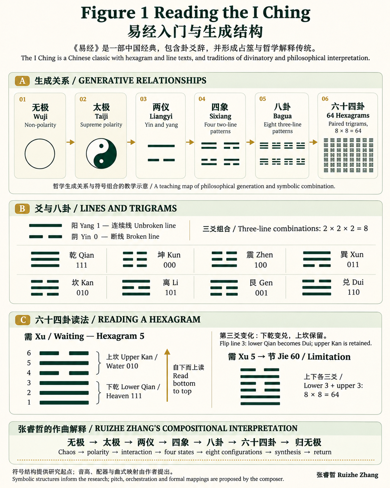
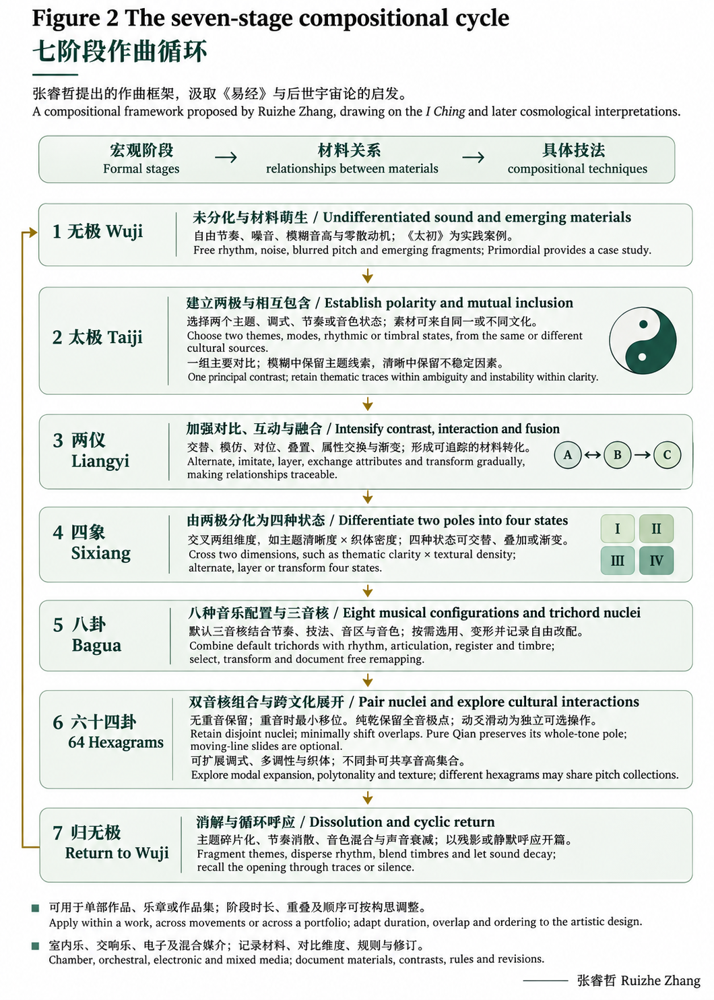
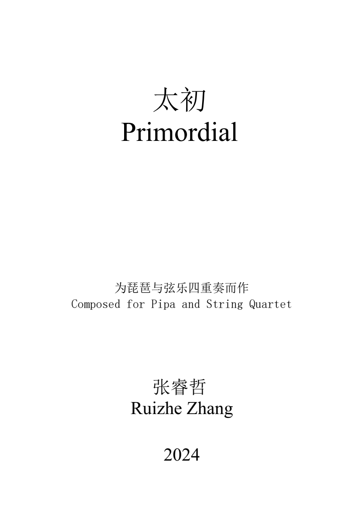
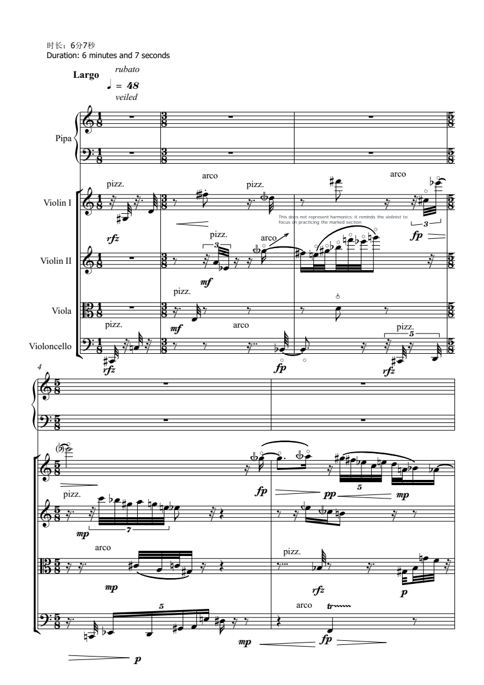

RULE 01 / MICRO
阴阳到音程与发音
阳爻倾向全音、纯四 / 五度与连音、保持；阴爻倾向半音、小二度 / 增四度、断奏、泛音、气鸣或拨弦摩擦。
I CHING TRICHORD & MODAL SYNTHESIS LAB
阅读生成图解与七阶段规则，或直接在下方选择上下卦开始实验。
Practice-led composition prototype
这是一个面向作品集创作的规则原型：下卦给出室内乐基础三音列，上卦给出独奏声部三音列；两者耦合成为六音列或可扩展调式。动爻不被当作命运判断，而被转译为可听见、可标注的横向声部滑动。


三音列 + 三音列 = 可配器的六声核心
RULE 01 / MICRO
阳爻倾向全音、纯四 / 五度与连音、保持；阴爻倾向半音、小二度 / 增四度、断奏、泛音、气鸣或拨弦摩擦。
RULE 02 / MESO
三爻由下而上对应三音列的时间 / 声部顺序。它是具有文化音响取向的细胞，不是静态和弦标签。
RULE 03 / MACRO
下卦与上卦耦合生成六音列，并可依作品情境扩展为七声调式；在卦序循环中形成从坤的密集到乾的开阔、再返无极的宏观呼吸。
点击任意单元格，作为新的上下卦作曲起点
64 个卦象档案 · 双调式 · 泛调性 · 可导入乐器录音
默认使用合成模型；上传清晰、无伴奏的单音录音后，按原音移调播放。单个样本大幅移调会改变音色。
把上下卦空间化，而非只把它们叠成和弦
WUJI → TAIJI → LIANGYI → SIXIANG → BAGUA → 64 HEXAGRAMS → WUJI
单首作品与整个作品集均可使用；适用于声学、电子与混合媒介。
六个演化阶段，加上第七个“归无极”闭环位置。六十四卦是第六阶段，不能替代整个七阶段体系。
在同一首作品中，将七阶段作为段落、乐章或贯穿发展的结构功能。各阶段时长由音乐需要决定；不要求平均分配。
让不同作品或组曲承担不同阶段，连成无极到归无极的大循环。《太初》作为无极阶段的开端与锚定案例；其他阶段可由后续作品展开。
室内乐、交响乐、纯电子音乐、声学乐器与电子音乐结合，以及世界乐器参与的混合形式均可承载本体系。具体编制依作品构思与资源决定。
哲学与音响
混沌未分、无形与不确定音响。
作曲规则
自由或无节拍节奏；噪音织体、环境音、非固定音高；刮奏、特殊拨弦、气鸣与敲击；非线性、弥散开篇。《太初》对应本阶段。
哲学与音响
从混沌中建立可感知的阴阳二元与极化张力。
作曲规则
三全音轴（如 C 与 F♯）、三全音与纯五度对置、半音与全音音场对置；持续共振与碎片点描形成两个张力场。
哲学与音响
对立元素交织、对话、追逐与相互渗透。
作曲规则
阳的连续旋律与阴的断奏点描交互；对话、模仿与对位；规则律动和不规则节奏叠置；冲突和声逐步融合。
哲学与音响
四季意象与四种独立音乐性格。
作曲规则
四种调式或音色组：中国五声、印度拉格、中古调式、人工音阶等文化参照；四度叠置、速度与情绪对照；可顺次铺陈或平行叠加。
哲学与音响
八种文化编码的音乐语汇与三音列核心。
作曲规则
按更新规则构建八组三音列：乾 [1–2–3]、坤半音簇、震 [5–1–♭2]、巽 [3–4–6]、坎 [5–6–7]、离 [1–♭3–3]、艮 [2–♭3–5]、兑 [6–1–2]；同时定义节奏、技法与文化取向。
哲学与音响
双三音列复合、多调式与最大化复调。
作曲规则
上下卦复合为音场，扩展跨文化人工调式；多调性、泛调性、复合节奏及频谱密度叠加；动爻以单音滑动连接调式，形成循环发展的复杂顶点。
哲学与音响
从复杂性消解回混沌、噪音或静默。
作曲规则
逐渐消退与简化、音高模糊、节奏消散、音色解体；呼应开篇，完成单曲或作品集的循环闭合。归无极是第七个结构位置，与初始无极相呼应。
来源：research aims 汇报中的生成循环、锚定作品与编制灵活性；研究PPT第10–14页的阶段技法、第16–19页的作品与交响／电子方案；以及作者本次明确的七阶段应用方式。
PORTFOLIO · COMPOSITION CASE

作曲：张睿哲 Ruizhe Zhang · 乐谱27页 · 标注时长6分7秒
根据乐谱中的作品说明，《太初》通过琵琶与弦乐的碰撞、流动的五声与七声旋律，以及动静对照表现本原意象。其叙事从混沌开端，经由中段爆发，回到平静的原始状态。
音频由作者提供；录音演奏者与制作方式未在本页另行署名。
阶段定位：无极。作品表现混乱的开始，以琵琶与弦乐四重奏探索未分化音响、扩展技法与本原意象。该作品的内部发展属于无极阶段的音响实践；它不按六十四卦逐一对应，也不承担整个七阶段循环。
乐谱开端标示 Largo、♩=48、rubato 与 veiled；可结合谱面观察零散事件、休止与拨弦／拉弦转换。
阶段定位：无极。作品表现混乱的开始，以琵琶与弦乐四重奏探索未分化音响、扩展技法与本原意象。该作品的内部发展属于无极阶段的音响实践；它不按六十四卦逐一对应，也不承担整个七阶段循环。

原始乐谱保留原有标记；预览只是阅读辅助。
以下为本研究的作曲映射提案；文化参照不表示历史上存在固定卦象与音阶对应。
| 卦 / 上下卦 | 三音列来源 | 文化参照 | 扩展音级 | 规则来源 | 你的原创映射 | 重复音与声部 |
|---|
PROVENANCE · CULTURE · ORIGINAL MAPPING
RP1讨论约翰·凯奇、周文中、赵晓生、钟耀光等先行研究，并提出象、数、理、占与循环创作的实践方向。下列书目来自RP1，作为研究入口，不表示其作者提出了本站全部音高映射。
Ruizhe Zhang. RP1: Hexagram Resonance: Contemporary Music Composition Practices through the Symbolic System of the I Ching's Sixty-Four Hexagrams.
Xue, K., & Loo, F. Y. (2019). Transcoding the I Ching as Composition Techniques in Chou Wen Chung, Zhao Xiaosheng and Chung Yiu Kwong. Musica Hodie, 19.
Zhao, X. (1988). Tai Chi composition system. Art of Music, (04), 16–25.
Chung, Y. K. (1995). I Ching Compositional System. City University of New York.
作者提出阴阳音程与技法、八卦三音列、上下卦耦合与动爻滑动。64卦扩展音级、试听算法和文化标签是网站实现提案；同一音级集合可能用于不同卦象。
创作者：张睿哲 Ruizhe Zhang